Wortelschim
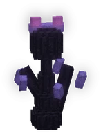
How to beat itZo versla je hem
In het donker sluipt hij achter je. Blijf in het licht, dan zie je hem en raak je hem goed.
LootBuit
1 roll(s), each 24% chance on gear; rarity rolled with luck 1.3.1 keer rollen, elke keer 24% kans op uitrusting; de zeldzaamheid met geluk 1.3. CoinsMunten: 56-104 bronzebrons.
| Item | Chance per rollKans per rol |
|---|---|
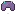 Wortelkroon | 2.8% |
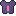 Wortelmantel | 2.8% |
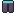 Wortelbroek | 2.8% |
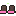 Wortelstappers | 2.8% |
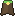 Wortelcape | 2.8% |
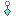 Sporenoorbel | 0.9% |
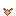 Harsketting | 0.9% |
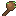 Takkenknots | 0.9% |
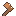 Schorshamer | 0.9% |
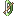 Liaanboog | 0.9% |
| Raatkruisboog | 0.9% |
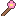 Bloesemstaf | 0.9% |
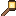 Lantaarnstaf | 0.9% |
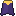 Schemercape | 0.9% |
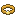 Honingarmband | 0.9% |
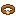 Harsarmband | 0.9% |
Hidden by your spoiler setting.Verborgen door je spoilerinstelling.